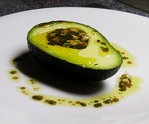

Avocado an Vinaigrette
5 von 62 avocados halbieren und mit 2 gekochten und gewürfelten eiern, olivenöl, aceto basamico, petersilie, salz und pfeffer füllen.

2 avocados halbieren und mit 2 gekochten und gewürfelten eiern, olivenöl, aceto basamico, petersilie, salz und pfeffer füllen.

Montagsplausch Nr. 123. Der Abend hiess «rindsschmorbraten mit essig und rahm (manzo alla california)».